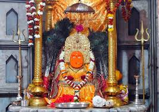

Major Cities and Urban Centers
Raipur
- Mahatma Gandhi Marine Drive: A beautiful waterfront area perfect for leisurely walks and enjoying sunsets.
- Chhattisgarh State Museum: A museum showcasing the rich history and culture of Chhattisgarh with various artifacts and exhibits.
- Shivneri Fort: A historical fort offering insights into the region's past along with stunning views.
.jpeg)
- Vivekananda Sarovar: A serene lake surrounded by parks, ideal for relaxation and outdoor activities.
- Rajiv Gandhi Honey Park: A unique park showcasing various species of bees and honey-making processes.
- Shri Balaji Temple: A beautifully constructed temple attracting many visitors and devotees.
Durg-Bhilai
- Shiv Mandir: A famous temple dedicated to Lord Shiva, known for its stunning architecture and peaceful ambiance.
- Durg District Museum: A museum showcasing the rich history and culture of the Durg region.
- Nehrunagar Park: A well-maintained park ideal for relaxation and family outings.

- Bhilai Steel Plant: One of the largest steel plants in India, known for its industrial significance.
- Devi Maa Danteshwari Temple: A revered temple dedicated to Goddess Danteshwari, attracting numerous devotees.
- Jawahar Lal Nehru Nagar: A residential area known for its greenery and community spaces.
Korba
- Katghora: A nearby area known for its picturesque landscapes and lush greenery, ideal for nature lovers.
- Surya Ghat: A scenic spot along the Hasdeo River, popular for picnics and enjoying sunset views.
- Korba Lake: A serene lake perfect for boating and relaxing amidst nature.
- Shiv Mandir: A revered temple dedicated to Lord Shiva, attracting many devotees and visitors.
- Hasdeo Dam: A large dam known for its scenic beauty, offering boating and fishing opportunities.
- Eco Park: A recreational park featuring walking trails, gardens, and play areas for families.
Jagdalpur
- Bastar Palace: A historical palace showcasing the rich cultural heritage of the Bastar region.
- Chitrakote Waterfall: Known as the "Niagara of India," this stunning waterfall is a must-visit destination.
- Tirathgarh Waterfall: A picturesque waterfall surrounded by lush greenery, ideal for nature lovers.
- Kanger Valley National Park: A national park known for its biodiversity, featuring caves and unique flora and fauna.
- Dantewada: Famous for its ancient temples and natural beauty, located close to Jagdalpur.
- Deobhog: A serene spot known for its scenic beauty and local cuisine, perfect for relaxation.
Waterfalls and Natural Attractions
Chitrakote Falls
- Chitrakote Falls: Known as the "Niagara of India," this majestic waterfall is about 30 meters high and is a breathtaking sight, especially during the monsoon season.
- Natural Beauty: Surrounded by lush greenery, the falls offer stunning views and opportunities for photography and nature walks.
- Activities: Visitors can enjoy boating and trekking in the nearby areas, making it a great spot for adventure enthusiasts.

- Nearby Attractions: Visit the Tirathgarh Falls and Kanger Valley National Park, both located close to Chitrakote Falls.
- Best Time to Visit: The best time to visit is during the monsoon season (June to September) when the falls are at their fullest.
- Local Cuisine: Enjoy the local Chhattisgarhi cuisine at nearby eateries and stalls.
Tirathgarh Falls
- Location: Situated in the Kanger Valley National Park, Tirathgarh Falls is a stunning waterfall that cascades down in multiple tiers.
- Natural Beauty: Surrounded by lush greenery and rocky terrain, the falls create a picturesque landscape, ideal for photography and nature walks.
- Activities: Visitors can enjoy trekking, picnicking, and exploring the nearby natural attractions.
- Accessibility: The falls are easily accessible by road, with nearby accommodations for tourists.
- Best Time to Visit: The ideal time to visit is during the monsoon season when the falls are in full flow.
- Photography: A popular spot for photographers, the falls offer breathtaking views, especially in the early morning or late afternoon light.
Amrit Dhara Waterfall
- Amrit Dhara Waterfall: A stunning waterfall nestled in the lush greenery of Chhattisgarh, known for its tranquil surroundings and scenic beauty.
- Accessibility: Located near the village of Dhanora, it's easily accessible by road, making it a popular destination for nature lovers.
- Best Time to Visit: The monsoon season (June to September) enhances the waterfall's beauty with increased water flow.
- Activities: Visitors can enjoy trekking, photography, and picnicking in the serene environment surrounding the waterfall.
- Flora and Fauna: The area is rich in biodiversity, offering a chance to spot various birds and wildlife.
- Nearby Attractions: Close to other natural sites and cultural landmarks, making it an excellent stop for tourists.
Kanger Valley National Park
- Chitrakote Waterfall: Often referred to as the "Niagara of India," this stunning waterfall is a major attraction, especially during the monsoon.
- Tirathgarh Waterfall: A picturesque waterfall surrounded by lush greenery, offering a serene environment for visitors.
- Kanger River: A beautiful river flowing through the park, ideal for nature walks and bird watching.

- Gandesh Caves: Ancient caves known for their stunning rock formations and historical significance.
- Natural Beauty: The park is rich in biodiversity, featuring dense forests, unique flora, and fauna, making it a paradise for nature lovers.
- Adventure Activities: Opportunities for trekking, camping, and exploring the rich wildlife of the park.
Historical and Archaeological Sites
Sirpur
- Sirpur Archaeological Site: An ancient site known for its Buddhist monuments, temples, and ancient ruins.
- Mahadev Temple: A historic temple dedicated to Lord Shiva, showcasing intricate carvings and architecture.
- Birla Mandir: A beautifully constructed temple that reflects the rich heritage and culture of the region.
- Ancient Buddhist Monastery: A site with remnants of ancient monastic life and architecture.
- Ram Mandir: A historic temple known for its stunning architecture and serene surroundings.
- Archaeological Museum: A museum displaying artifacts and findings from the region, highlighting its rich history.
Ratanpur
- Ratanpur Fort: An ancient fort built in the 14th century, known for its impressive architecture and historical significance.
- Mahadev Ghat: A sacred site along the banks of the Mahanadi River, popular for its serene environment and temples.
- Shiv Mandir: A revered temple dedicated to Lord Shiva, attracting pilgrims and history enthusiasts alike.
- Archaeological Remains: Sites that reflect the rich history and culture of the region, including ancient sculptures and inscriptions.
- Khambalida Caves: Ancient rock-cut caves located nearby, known for their historical carvings and intricate designs.
- Local Festivals: Various cultural festivals held in Ratanpur, celebrating its heritage and traditions.
Malhar
- Malhar Archaeological Site: Known for its ancient ruins and remnants of temples, showcasing the region's historical significance.
- Shiv Mandir: An ancient temple dedicated to Lord Shiva, featuring intricate carvings and historical architecture.
- Ancient Stupas: Remains of stupas that reflect the rich Buddhist heritage of the area.
- Malhar Museum: A museum that displays artifacts and exhibits related to the history and archaeology of Malhar.
- Ancient Temples: Remnants of various temples that date back to the medieval period, showcasing architectural styles of the time.
- Nearby Caves: Historical caves in the vicinity that offer insights into the ancient inhabitants of the region.
Barsoor
- Barsoor Temples: Ancient temples featuring intricate carvings, showcasing the region's rich architectural heritage.
- Ancient Ruins: Remnants of a bygone era that offer insight into the history and culture of the area.
- Gondwana Heritage: Sites reflecting the Gondwana dynasty's influence, including inscriptions and sculptures.

- Shiv Mandir: An ancient temple dedicated to Lord Shiva, known for its serene environment and historical significance.
- Chandraditya Temple: A temple with stunning carvings dedicated to the Sun God, showcasing exceptional craftsmanship.
- Local Festivals: Celebrations that highlight the cultural heritage of the region, often held at historical sites.
Pilgrimage Sites
Danteshwari Temple
- Danteshwari Temple: A revered pilgrimage site dedicated to Goddess Danteshwari, one of the 51 Shakti Peethas, known for its ancient architecture and spiritual significance.
- Location: Situated in Dantewada, Chhattisgarh, the temple attracts thousands of devotees and tourists each year.
- Festivals: The temple hosts various festivals, including Navaratri, where grand celebrations and rituals take place.
- Architecture: The temple features intricate carvings and sculptures, reflecting the rich heritage of Chhattisgarh.
- Nearby Attractions: Visitors can explore other nearby temples and natural landscapes, enhancing their pilgrimage experience.
- Visiting Hours: The temple is open to visitors throughout the day, with special rituals conducted in the morning and evening.
Rajiv Lochan Temple
- Rajiv Lochan Temple: A revered pilgrimage site dedicated to Lord Vishnu, known for its stunning architecture and serene surroundings.
- History: The temple dates back to the 12th century and features intricate carvings and beautiful sculptures that depict various deities.
- Festivals: The temple hosts numerous festivals throughout the year, attracting devotees from across the region.
- Architecture: The temple is known for its unique design, featuring a tall shikhara and beautiful stone work.
- Location: Situated in the town of Rajim, it is part of a larger complex of temples and is a key pilgrimage destination in Chhattisgarh.
- Visiting Hours: The temple is open to visitors daily, with special prayers conducted during major festivals.
Champaran
- Champaran Stupa: A revered Buddhist stupa, attracting pilgrims and tourists interested in Buddhism.
- Shree Rajiv Lochan Mandir: An ancient temple dedicated to Lord Vishnu, known for its beautiful architecture and spiritual significance.
- Hanuman Mandir: A popular temple dedicated to Lord Hanuman, often visited by devotees seeking blessings and peace.
- Gautam Buddha Park: A serene park featuring a statue of Buddha, perfect for meditation and reflection.
- Shri Chhath Puja Ghat: A significant ghat for performing Chhath Puja, attracting numerous devotees during the festival.
- Champaran Mahadev Temple: A temple dedicated to Lord Shiva, known for its peaceful environment and religious importance.
Bambleshwari Temple
- Location: Situated on a hilltop in Dongargarh, this temple is dedicated to Goddess Bambleshwari.
- Significance: A major pilgrimage site, known for its religious importance and beautiful surroundings.
- Festivals: The temple hosts several festivals throughout the year, attracting thousands of devotees.

- Architecture: The temple features stunning architecture and offers breathtaking views of the surrounding hills.
- Accessibility: Accessible by a well-maintained road, with a path leading up to the temple from the base of the hill.
- Nearby Attractions: Visitors can explore nearby scenic spots and enjoy the natural beauty of the area.
Cultural and Tribal Attractions
Bastar Dussehra
- Celebration of Tribal Culture: Bastar Dussehra is one of the most significant festivals in Chhattisgarh, showcasing the rich cultural heritage of the tribal communities.
- Unique Rituals: The festival includes unique rituals like the "Bastar Dussehra procession," where traditional tribal dances and songs are performed.
- Deities and Offerings: The festival honors the local deities, with elaborate offerings and rituals, including the famous "Ghotul" dance.
- Tribal Crafts and Art: The festival features stalls showcasing tribal crafts, art, and handmade goods, reflecting the skills of local artisans.
- Food and Cuisine: Visitors can enjoy traditional tribal cuisine, which is an integral part of the celebration.
- Community Participation: The festival fosters community bonding, with local tribes coming together to celebrate and participate in various events.
Bastar Palace
- Bastar Palace: A historical palace that reflects the rich tribal culture and heritage of the Bastar region. Once the residence of the kings of Bastar, the palace showcases intricate architecture and traditional crafts.
- Tribal Artifacts: The palace houses a collection of tribal artifacts that highlight the lifestyle and customs of the indigenous communities of Chhattisgarh.
- Cultural Events: The palace often hosts cultural events and festivals that celebrate the tribal traditions, music, and dance, providing visitors with an immersive experience.
- Architectural Beauty: The palace is an architectural marvel, with its grand entrance, intricately carved pillars, and beautiful courtyards.
- Local Cuisine: Visitors can explore the local cuisine at nearby eateries, offering traditional Bastar dishes that reflect the region's flavors.
- Natural Surroundings: Surrounded by lush forests and hills, the palace offers a serene atmosphere, ideal for nature lovers.
Cultural and Tribal Attractions in Chhattisgarh
- Chitrakote Waterfalls: Often referred to as the Niagara of India, this stunning waterfall is surrounded by lush greenery and tribal villages.
- Bastar Dussehra: A unique festival celebrated in the Bastar region, showcasing rich tribal traditions, rituals, and vibrant cultural performances.
- Kanger Valley National Park: Home to diverse flora and fauna, it also houses tribal communities that maintain their traditional lifestyles.
- Tribal Villages: Visit villages like the Kanger Valley and Bastar to experience the rich traditions, art, and crafts of the local tribes.
- Shivnath River: Explore the scenic beauty along this river, which is also an important cultural site for tribal communities.
- Bastar Art and Craft: Discover the unique tribal art, including intricate wood carvings, wrought iron crafts, and traditional textiles.
Wildlife Sanctuaries and National Parks
Indravati National Park
- Flora: Home to diverse flora, including Sal, Teak, and Bamboo forests, offering a rich ecosystem.
- Fauna: Known for its population of Wild Buffalo, Sloth Bears, and various species of deer and birds.
- Tribal Culture: Surrounding tribal communities, such as the Gond and Maria tribes, add to the park's cultural significance.
- Safari Tours: Offers guided safari tours for wildlife enthusiasts to explore the rich biodiversity.
- Birdwatching: A paradise for birdwatchers with numerous resident and migratory bird species.
- Conservation Efforts: Active initiatives aimed at protecting the park's flora and fauna.
Sitanadi Wildlife Sanctuary
- Flora: The sanctuary is home to a diverse range of flora, including sal, teak, and bamboo forests.
- Fauna: It hosts various species of animals, including leopards, deer, wild boars, and numerous bird species.
- Nature Trails: The sanctuary offers picturesque trails for trekking and exploring the natural beauty.
- Bird Watching: A haven for bird enthusiasts, the sanctuary is home to numerous migratory and resident bird species.
- Eco-Tourism: The sanctuary promotes eco-tourism, providing opportunities for nature lovers to experience wildlife in their natural habitat.
- Accessibility: The sanctuary is accessible from nearby towns, making it an ideal spot for weekend getaways.
Achanakmar Wildlife Sanctuary
- Location: Situated in the Bilaspur district, Achanakmar Wildlife Sanctuary is part of the larger Achanakmar Forest Reserve.
- Flora: The sanctuary is rich in diverse flora, including teak, sal, and various medicinal plants.
- Fauna: Home to a variety of wildlife, including leopards, sloth bears, wild boars, and numerous bird species.
- Activities: Visitors can enjoy trekking, wildlife photography, and birdwatching in this serene environment.
- Best Time to Visit: October to June is the ideal period for wildlife sightings.
- Nearby Attractions: The sanctuary is close to other attractions like the Ratanpur Fort and the historic city of Bilaspur.